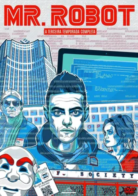

Temporada 1:
A primeira temporada segue Elliot Alderson, um engenheiro de segurança cibernética que é um hacker vigilante à noite. Ele é recrutado por um grupo chamado "Fsociety" para derrubar uma megacorporação chamada E Corp. A temporada explora sua luta com questões de saúde mental e revelações surpreendentes sobre a verdadeira natureza de seu mentor, Mr.
Temporada 2:
Nesta temporada, as consequências do ataque cibernético iniciado pela Fsociety se desenrolam. Elliot lida com problemas de identidade e memória, enquanto o caos se instala no mundo. A temporada revela segredos sobre a organização secreta "Dark Army" e a complexa trama de conspiração.
